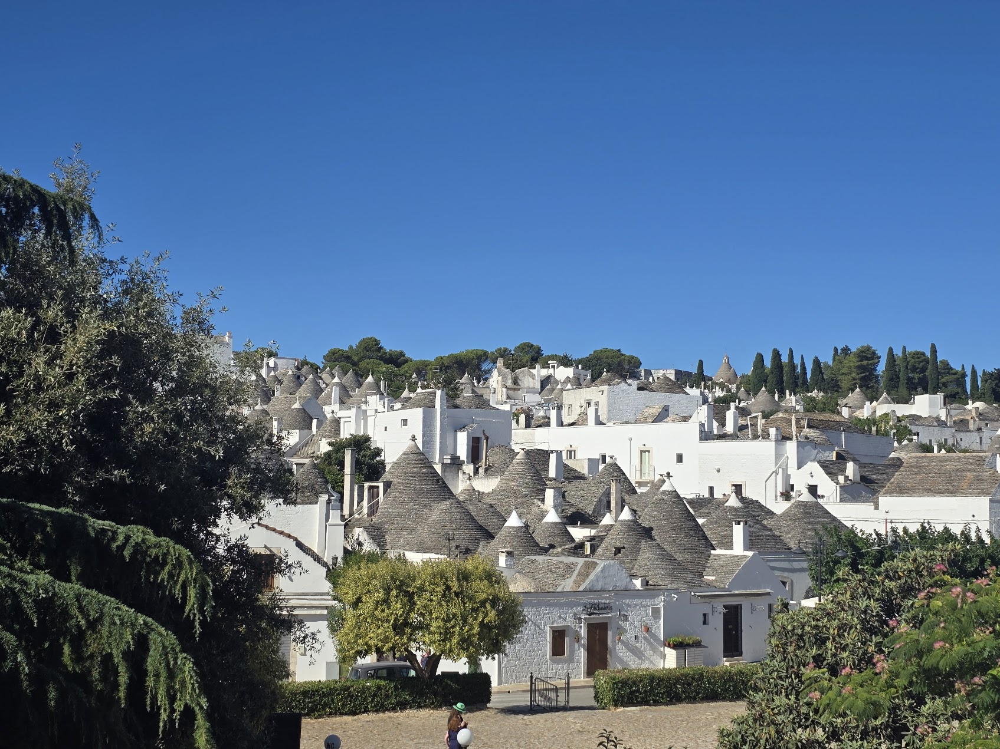
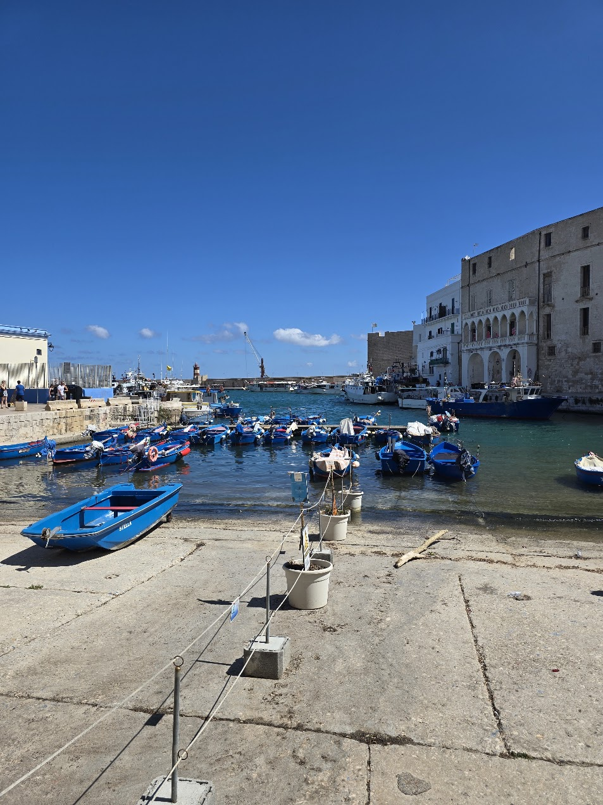
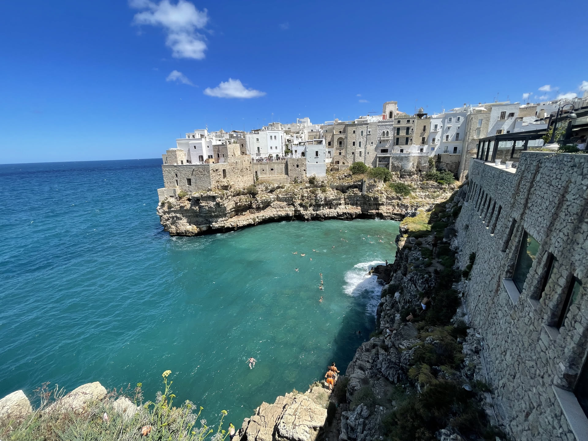
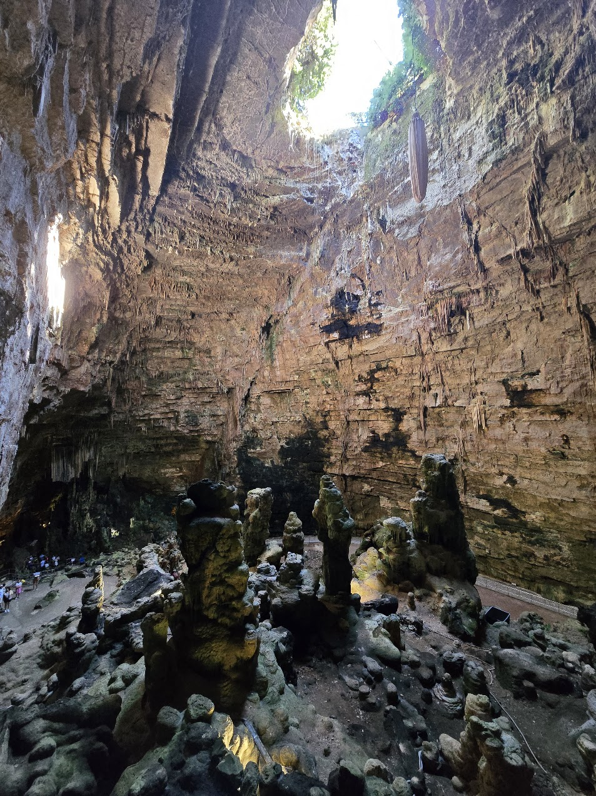

Plan wycieczki
Zwiedzone miejsca
- Alberobello
- Monopoli
- Polignano a Mare
- Grotte di Castellana
- Brindisi
- Lecce
- Cave of Poetry
- Matera
- Metaponto
- Craco
- Crotone
- Le Castella
- Scilla
- Tropea
- Maratea
- Certosa di Padula
- Neapol
- Pompeje
- San Giovanni Rotondo
- Vieste
Czas wycieczki: 12 dni
Skład osobowy: 2 dorosłych, 2 dzieciaki
Przejechane kilometry: około 1800
Punkt początkowy/końcowy: Bari
Podczas tego wyjazdu mieliśmy chyba najwięcej okazji do zmian planu i dostosowania się do bieżących wydarzeń. W planie początkowo mieliśmy kilka miast więcej, ale panujący upał skutecznie zniechęcił nas do spacerów wśród kolejnych nagrzanych słońcem ulic. Nie zobaczyliśmy też Bari, choć mieliśmy to w planach zaraz po przylocie, bo zaraz po wyjechaniu z lotniska wjechał w nas inny samochód - nie było to poważne i nikomu nic się nie stało, ale z racji tego, że samochód był wypożyczony, musieliśmy czekać na policję i po prostu brakło nam czasu. Wynajęcie samochodu to kolejna przygoda, bo pomimo zapewnień, że nasza karta zostanie zaakceptowana - wypożyczalnia odmówiła wydania pojazdu i na szybko szukaliśmy czegoś innego. A ostatnimi zmianami w planie był czas spędzony na plaży, bo kiedy mieliśmy do wyboru miasto czy miejsce, które nie było "must have" to odpuszczaliśmy je na rzecz plażowania właśnie. Ale udało nam się chyba znaleźć wszystkie rodzaje plaż: dzikie, wśród klifów, z piaskiem, z kamyczkami a nawet wypełnioną po brzegi muszelkami.
Plan wycieczki
Trasa
Zwiedzanie
Alberobello, Monopoli, Polignano a Mare, Grotte di Castellana i Ostuni
Naszą przygodę z południowymi Włochami rozpoczęliśmy od miejsc, które chyba najlepiej oddają charakter Apulii. Pierwszym przystankiem było Alberobello, którego charakterystyczne domki trulli od dawna znajdowały się na naszej liście miejsc do zobaczenia. Kolejnym punktem na trasie było Monopoli czyli niewielkie nadmorskie miasteczko urzekło nas klimatycznym starym miastem, niewielkim portem i spokojną atmosferą. Niedaleko znajduje się położone na wysokich wapiennych klifach Polignano a Mare. Zeszliśmy na słynną plażę Lama Monachile, ukrytą pomiędzy wysokimi skałami i tam udało nam się spotkać niewielkiego kraba spacerującego między kamieniami. Po południu zeszliśmy pod ziemię, odwiedzając Grotte di Castellana. To jeden z największych i najpiękniejszych systemów jaskiń we Włoszech.




Zwiedzanie
Brindisi, Lecce, Grotta della Poesia i Matera
Nasze zwiedzanie rozpoczęliśmy od Brindisi. To miasto często traktowane jest jedynie jako port lub punkt przesiadkowy, a szkoda, bo zdecydowanie zasługuje na chwilę uwagi. Następnie odwiedziliśmy Lecce, które nazywane jest "Florencją Południa". Miasto pełne bogato zdobionych barokowych budowli, a spacer po jego historycznym centrum co chwilę odsłania kolejne place, kościoły i pałace. Kolejnym punktem była Grotta della Poesia, czyli słynna Jaskinia Poezji. To naturalny basen z krystalicznie czystą wodą, otoczony wapiennymi skałami. Mamy mieszane uczucia, czy rzeczywiście było warto to zobaczyć, zwłaszcza w porównaniu do innych miejsc, które widzieliśmy podczas tego wyjazdu. No i Matera – miejsce, które zrobiło na nas chyba największe wrażenie podczas całego wyjazdu. Wykute w skale domy, kościoły i uliczki tworzą krajobraz zupełnie inny niż wszystko, co wcześniej widzieliśmy. Spacer po dzielnicy Sassi pozwala dosłownie przenieść się w czasie, a z kolejnych punktów widokowych miasto wygląda jeszcze bardziej niezwykle. Nic dziwnego, że Matera wielokrotnie pojawiała się w filmach i została wpisana na listę światowego dziedzictwa UNESCO. Jeśli mielibyśmy wskazać jedno miejsce, którego nie można pominąć podczas podróży po południowych Włoszech, to zdecydowanie byłaby to właśnie Matera. Na koniec zatrzymaliśmy się jeszcze w stanowisku archeologicznym w Metaponto.


Zwiedzanie
Craco, Crotone, La Castella, Scilla i Tropea
Craco to opuszczone miasto położone na szczycie wzgórza które już z daleka wygląda niezwykle. Po osuwiskach i trzęsieniach ziemi mieszkańcy musieli opuścić swoje domy, a dziś Craco jest niemal zamrożone w czasie. Spacer z przewodnikiem po opustoszałych uliczkach robi naprawdę duże wrażenie i pozwala zobaczyć miejsce zupełnie inne niż wszystkie odwiedzone wcześniej.Kolejny punkt do Crotone, gdzie odwiedziliśmy również park Pitagorasa, który okazał się świetnym przystankiem dla dzieciaków. Przyznam jednak, że atrakcje są już tutaj lekko nadryzione zębem czasu. Następnie pojechaliśmy do Le Castella z charakterystycznym zamkiem Castello Aragonese, położonym na niewielkiej wyspie tuż przy brzegu. Po drodze do Tropei zatrzymaliśmy się na chwilę w Scylli, głównie z powodu mojej słabości do mitologii. Sama Tropea, która jest też znana jako miasto czerwonej cebuli, jest piękna - położona na wysokim klifie z historycznym centrum i punktami widokowymi.


Zwiedzanie
Certosa di Padula i Neapol
Kolejne dni naszej podróży upłynęły pod znakiem miejsc, które trudno ze sobą porównać. Z jednej strony monumentalny i cichy klasztor ukryty wśród wzgórz, z drugiej tętniący życiem i pełen chaosu ulicznego Neapol. Certosa di Padula to jeden z największych klasztorów w Europie i największy klasztor kartuzów we Włoszech. Znajduje się tu ponad 300 pomieszczeń, rozległe krużganki, piękne ogrody i imponujące schody z białego marmuru. Bardzo nam się tam podobało i uważamy, że warto zarezerwować sobie trochę czasu, by nie tylko zobaczyć najważniejsze części klasztoru, ale też pospacerować po jego dziedzińcach. Następnie ruszyliśmy do Neapolu czyli miasta, które od pierwszych minut dostarczyło nam sporo emocji. Największym wyzwaniem okazał się ruch uliczny. Jazda samochodem po Neapolu to doświadczenie, którego długo nie zapomnimy. Przepisy drogowe nie wydają się tutaj nawet luźną sugestia, raczej inforacją do zignorowania. Miasto wynagrodziło nam jednak spacerem po historycznym centrum, wpisanym na listę UNESCO, to nieustanne odkrywanie kolejnych placów, kościołów i ukrytych zaułków. No i oczywiście pizzą, która podobno narodziła się właśnie tutaj.


Zwiedzanie
Pompeje i Vieste
Po zwiedzaniu Neapolu wybraliśmy się do Pompei. Spacer po ulicach miasta, które niemal dwa tysiące lat temu zostało zasypane popiołem po erupcji Wezuwiusza, robi ogromne wrażenie. Byliśmy zaskoczeni jak wiele rzeczy zachowało się w tym miejscu oraz ogromem pracy archeologów. Do dziś zachowały się nie tylko budynki, świątynie i amfiteatr, ale również brukowane ulice czy ślady codziennego życia dawnych mieszkańców. To jedno z tych miejsc, gdzie historia przestaje być jedynie opisem w podręczniku i staje się czymś, co można zobaczyć na własne oczy. Warto zarezerwować sobie na zwiedzanie przynajmniej kilka godzin bo teren jest naprawdę rozległy. Spędziliśmy tam sporo godzin i gdyby nie coraz bardziej dający się we znaki upał, pewnie zostalibyśmy tam dłużej. Wracając w stronę Apulii, przejeżdżaliśmy przez Park Narodowy Gargano. Nie planowaliśmy tam dłuższego postoju, ale zupełnie przypadkiem trafiliśmy na karmienie jeleni. Zwierzęta były bardzo blisko ogrodzenia, więc zatrzymaliśmy się tam na dłuższą chwilę, przy okazji ciesząc się cieniem jaki dawał nam otaczający nas las. Na zakończenie dotarliśmy do Vieste, jednego z najbardziej malowniczych miast półwyspu Gargano. Historyczne centrum położone na wapiennym klifie zachwyca labiryntem wąskich uliczek, białą zabudową i pięknymi widokami na Adriatyk. Niedaleko znajduje się również słynna skała Pizzomunno, z którą wiąże się lokalna legenda o nieszczęśliwej miłości.